By analogy with the process of evaporation, liquid may form in one of three ways corresponding to the existence of an unstable, metastable or stable equilibrium state. Let us briefly look at each one of these to understand the condensation process. In practical engineering design of heat exchange equipment the stable condensation situation needs to exist.
Consider a liquid drop of radius, r*, in equilibrium with its surrounding vapor at a system temperature, 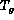 , and pressure, 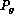 . The vapor pressure, under equilibrium conditions, is higher than the vapor pressure, , for a planar surface, and this difference is given by
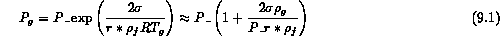
where R is the vapor gas constant and is the surface tension between the liquid and vapor. With the local condition of mechanical equilibrium for the liquid droplet and its pressure, 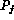 ,
one can find the liquid pressure in the droplet as
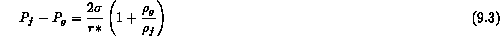
One can also use the Clausius-Clapeyron relation to calculate for this simple situation the saturation temperature, 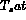 , of the droplet above the vapor temperature for maintaining this equilibrium
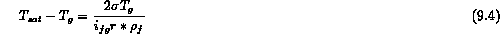
Analogous to boiling, the rate of nucleation of these liquid droplets depends on whether one considers homogeneous nucleation or heterogeneous nucleation processes. For homogeneous nucleation the rate expression, dn/dt, is quite similar to that for boiling,
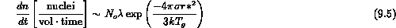
where r* can be found either from Eq.2 or 3. The term, , is the number of vapor molecules per unit volume and  is a collision frequency 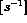 for vapor collisions given by
is a collision frequency 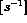 for vapor collisions given by
where m is the mass of one vapor molecule. One should note that in a similar fashion to boiling this nucleation rate is altered if it occurs on solid surfaces since the work required to form a critical size nuclei (r*) is reduced due to wetting of the solid surface.
Now in reference to the more stable situations of a vapor condensing on a planar surface covered by its own liquid one must consider the local mass transfer situation. Consider a pure saturated vapor at a pressure, , and a temperature, , condensing on its own liquid phase whose surface temperature is 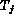 . The phenomenon of such an interface mass transfer can be viewed from the standpoint of kinetic theory as a difference between two quantities; a rate of arrival of molecules from the vapor space towards the interface and a rate of departure of molecules from the surface of the liquid into the vapor space. When condensation takes place the arrival rate exceeds the departure rate. During evaporation the reverse occurs, and during an equilibrium the two rates are equal and there is no net mass transfer.
From kinetic theory it can be shown that, in a stationary container of molecules, the mass rate of flow (of molecules) passing in either direction (to right or left) through an imagined plane is given by
where = flux of molecules (mass per unit time per unit area) M =molecular weight R = universal gas constant P and T = pressure and temperature related by the saturation line. Equation 7 is the starting point for many theories of interfacial phase change.
In general it can be stated that the net molecular flux through an interface is the difference between these fluxes in the directions from gas to liquid and vice-versa,
Since the condition close to the surface is not one of static thermal equilibrium, for any significant rate of evaporation or condensation, it is really not meaningful to make use of the thermostatic pressure and temperature on each side of the interface. Rather there is a concentration and therefore, a temperature difference, , across this interface which drives the mass transfer. Strictly speaking one should solve the Boltzman transport equation with appropriate boundary conditions and asymptotes which are conditions of thermal equilibrium at several mean free path distances from the interface. However, some considerable success for engineering purposes has been achieved by using simplified kinetic theory techniques and applying correction factors to the resulting predictions of this mass transfer and the associated temperature difference. In most practical situations the energy removal rate from this interface controls the condensation rate. Only in the presence of noncondensable gases (continuum) or at low pressure (non-continuum) is this temperature difference, , important to consider. We will investigate the case of the presence of noncondensable gases during condensation; one can get a physical feeling of the magnitude of this temperature difference.